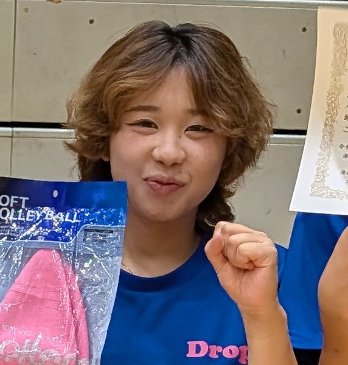
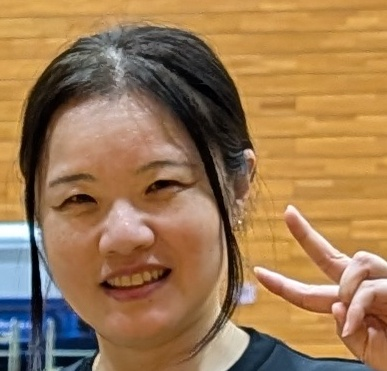
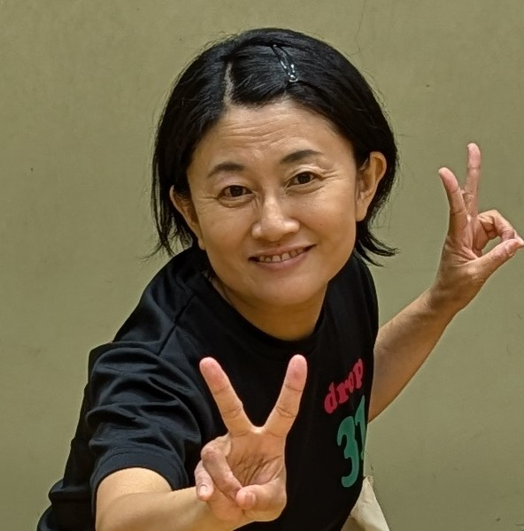
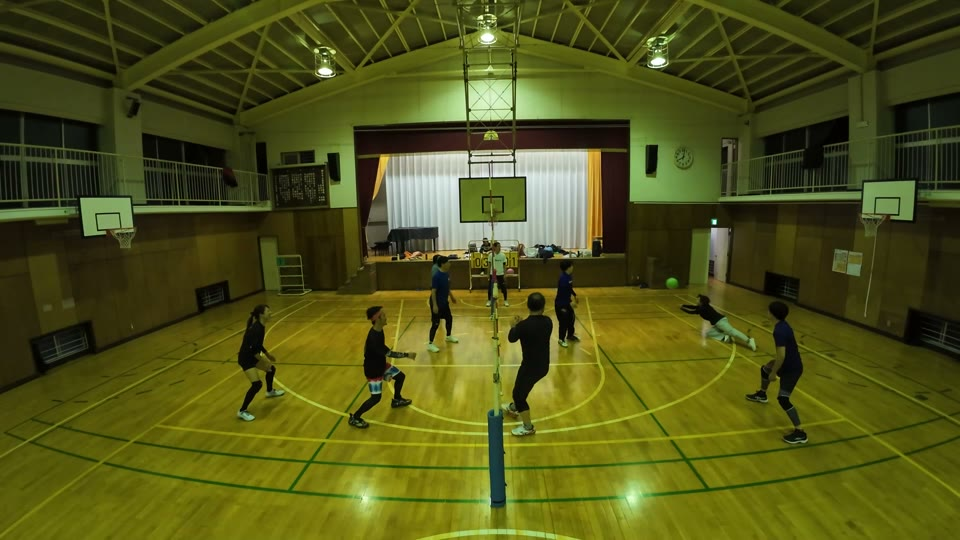
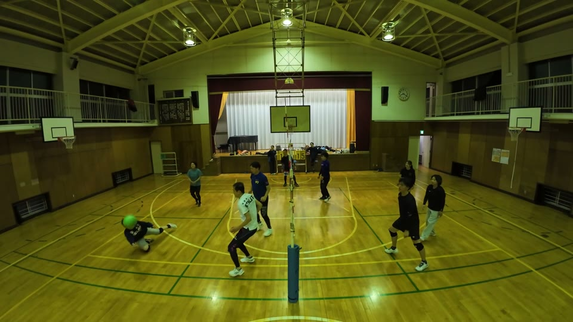
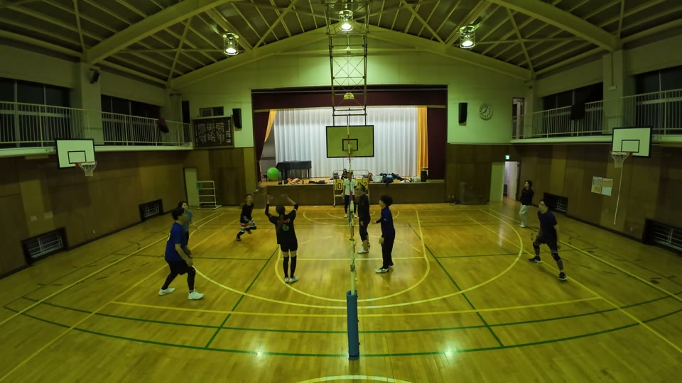
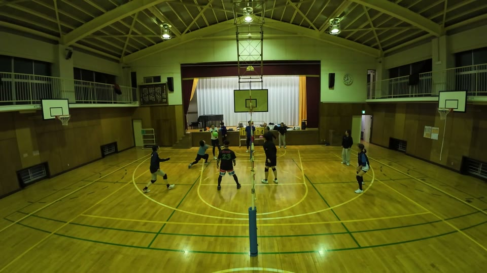
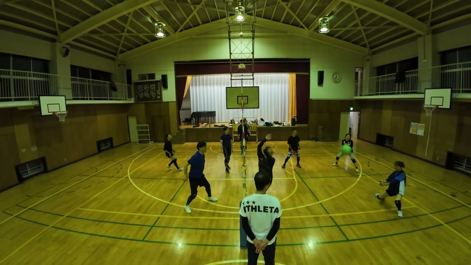
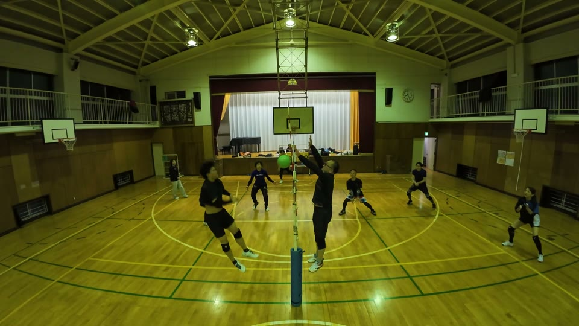
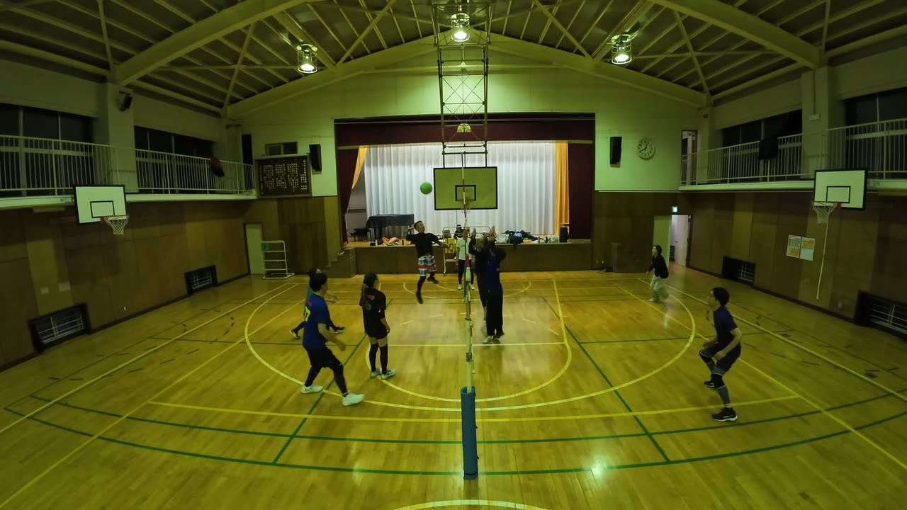

ゆい が横に大きく飛び込んで拾い、ラリーをつないだ 34:02
ゆい が飛び込んで拾い、けん へつないだ 8:16

あき が飛び込んで拾い、けん が返して得点 51:50
あき の連続サーブ(5本続けて、11点から15点に)。この1本はサービスエース 1:21:23

ゆきよ の Bクイック を、やっさん がアタックで決めた 34:50
ゆきよ のバックトスを、るき が跳んで打った 1:32:19

ゆりこ が後ろから上げ、かずお へつないだ 24:18
ゆりこ が後ろから高く上げ、やっさん が打った 24:27

かずえ が低く滑り込んで拾い、ラリーが続いた 3:43

やまさん のブロックで得点 56:16
やまさん のアタックが、ブロックの上を越えて決まった 33:40
やまさん のアタックが決まった 1:08:08
あき るき のアタックが、あき の顔に当たりました。あき、大丈夫でしたか。 44:36
やっさん やっさん の胸トラップ。(やっさんのリクエスト) 1:01:04
やまさんに触るな 「やまさんに触るな」の声が飛んだ場面。(やっさんのリクエスト) 1:05:46
やっさん 34:51 アタック(ゆきよ のトスから)
けん 51:52 あき が拾った球を返して得点
うっちー 9:16 レシーブ、10:23 アタック
こもりん 58:57 アタックで得点(ゆい のトスから)

Produced by けんぴー(AI)